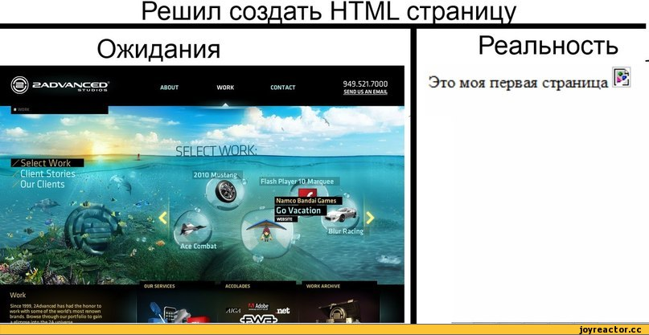
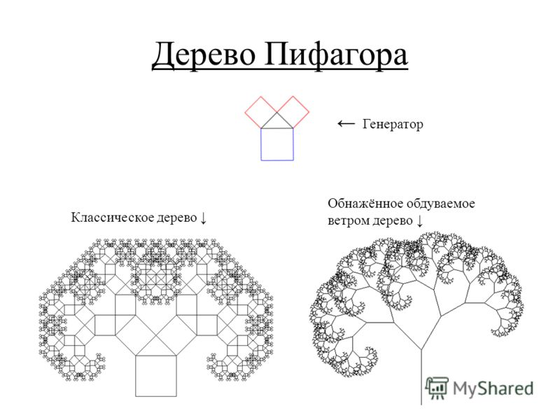
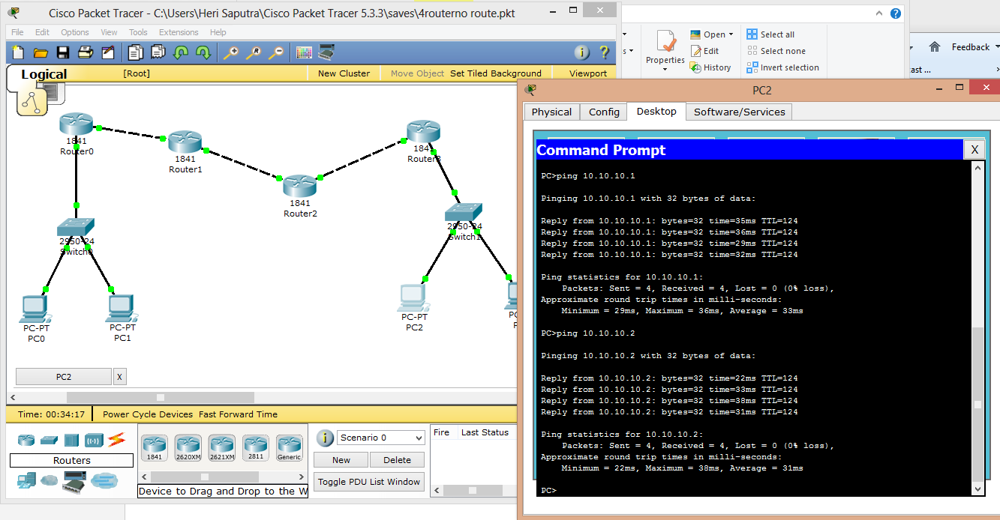

Лаб №1
Создание персональной страницы-отчета на github и работа с git


Лаб №2
Проектирование и разработка индивидуального или коллективного веб-приложения с использованием html,css,js
Лаб №3
Проектирование локальной сети в Cisco Packet Tracer.Настройка коммутаторов и маршрутизаторов.
